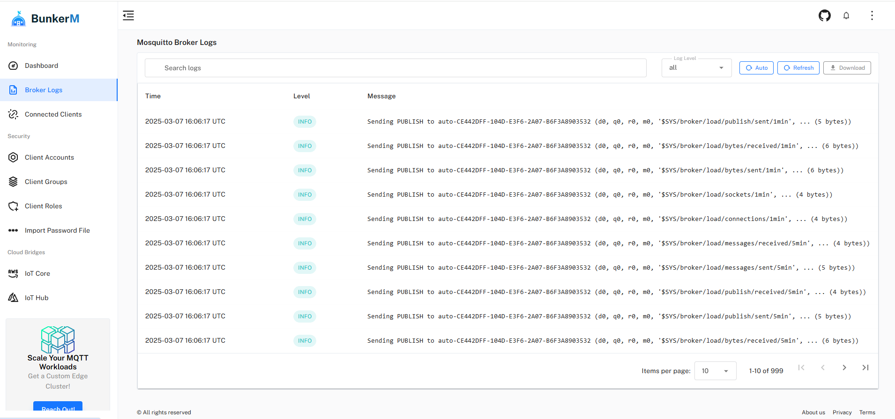

Broker Logs
The Broker Logs interface in BunkerM provides detailed visibility into the Mosquitto MQTT broker's operation. These logs are essential for troubleshooting issues, monitoring broker health, and understanding client connection patterns.

Understanding Broker Logs
Broker logs capture various events and activities within the Mosquitto MQTT broker, including:
- Client connections and disconnections
- Authentication successes and failures
- Subscription activities
- Configuration changes
- Error conditions
- Broker startup and shutdown events
These logs provide a chronological record of all significant events in the broker's operation.
Log Interface Overview
The broker logs interface displays a table of log entries with the following information:
- Timestamp: When the log entry was recorded
- Level: The severity level of the log entry
- Message: The detailed log message
- Source: The component that generated the log entry
Log Levels
BunkerM displays logs with different severity levels, each indicated by a distinct color:
- Debug (Gray): Detailed information useful for debugging
- Info (Blue): General information about normal operation
- Notice (Green): Important but normal events
- Warning (Orange): Potential issues that don't affect core functionality
- Error (Red): Serious problems that affect functionality
- Critical (Purple): Severe errors that may cause system instability
Filtering Logs
To help you find relevant information quickly, the broker logs interface provides several filtering options:
Time Range Filtering
Select logs from a specific time period:
- Last hour: Show only logs from the past hour
- Last day: Show only logs from the past 24 hours
- Last week: Show only logs from the past 7 days
- Custom range: Specify a custom date and time range
Level Filtering
Filter logs by severity level:
- Select one or more log levels to display
- Deselect levels you want to hide
Text Search
Search for specific text within log messages:
- Enter keywords in the search box
- The results will show only logs containing those keywords
Exporting Logs
For record-keeping or external analysis, you can export broker logs:
- Apply any desired filters to narrow down the logs
- Click the Export button
- Choose your preferred format (CSV or JSON)
- Save the file to your local system
Common Log Patterns
Understanding common log patterns can help you quickly identify issues:
Normal Operation
1678901234: New client connected from 192.168.1.100 as client123 (c1, k60, u'client123').
1678901235: Client client123 disconnected.
These logs show normal client connection and disconnection events.
Authentication Issues
1678901234: Client client456 disconnected due to protocol error.
1678901235: Client <unknown> disconnected, not authorized.
These logs indicate clients failing to authenticate properly.
Configuration Problems
1678901234: Error: Unable to load certificate file.
1678901235: Warning: Maximum connections limit reached.
These logs point to configuration issues that need attention.
Troubleshooting with Broker Logs
Connection Issues
If clients can't connect to the broker:
- Look for authentication errors in the logs
- Check for "maximum connections" warnings
- Verify that the broker is accepting connections on the expected port
Performance Problems
If the broker is performing poorly:
- Look for warnings about resource limits
- Check for frequent client disconnections and reconnections
- Monitor for unusual message patterns
Security Concerns
To investigate potential security issues:
- Look for repeated authentication failures from the same IP address
- Check for unauthorized access attempts
- Monitor for unusual connection patterns
Log Retention
BunkerM retains broker logs according to the following policy:
- Default retention: 7 days
- Maximum log size: 1GB
When logs exceed these limits, older entries are automatically pruned.
Related Documentation
- Client Logs - For client-specific activity logs
- Performance Metrics - For broker performance monitoring
- Troubleshooting - General troubleshooting guidance